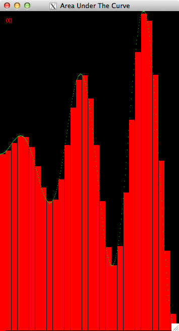
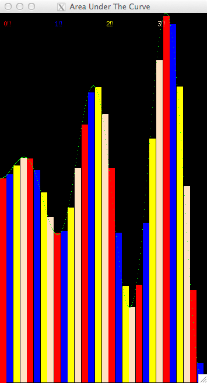

Visualize Data Decomposition of Numerical Integration¶
 Prologue
This is an activity that steps you through some code we have prepared to help you see how several parallel implementations that solve the numerical integration problem might split the work among processing units.
Prerequisites
Reading the CSinParallel material entitled Concept: The Data Decomposition Pattern will provide useful background information regarding the parallel pattern illustrated with these visualizations.
- You will need to be able to run these programs on a unix machine with X11 installed and with at least one of the following:
- MPI installed on a single computer or cluster (either MPICH2 or OpenMPI)
- gcc with OpenMP (most versions of gcc have this enabled already) and a multicore computer
Some knowledge of building C programs using make may be useful.
Some understanding of numerical integration: approximating the integral as the area under a curve with left and right boundaries using the ‘rectangle rule’.
Nomenclature
A Processing Unit is an element of software that can execute instructions on hardware. On a multicore computer, this would be a thread running on a core of the multicore chip. On a cluster of computers, this would be a process running on one of the computers. On a co-processor such as a Graphics Processing Unit (GPU), this would be a thread running on one of its many cores.
A program that uses only one processing unit is referred to as a serial or sequential solution. You are likely most familiar with these types of programs.
Code You will Need
You should download VisArea.tgz to obtain the code that you will run for the examples shown in the following sections of this reading.